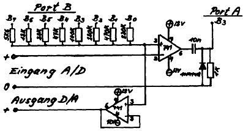
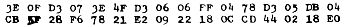
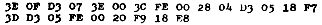
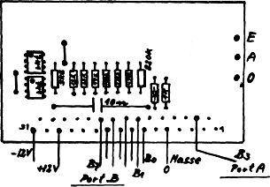
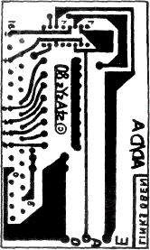

Nascom Journal |
1/81 |
Diese einfache Schaltung benötigt nur zwei Operationsverstärker µA 741, einige Widerstände, eine Universaldiode und einen Kondensator. So ist sie weit billiger als käufliche integrierte Wandler und kann zudem leicht auf acht Eingänge erweitert werden.
Es ist zu empfehlen, Metallschichtwiderstände zu benutzen. Die Genauigkeit normaler Widerstände reicht aber auch in vielen Fällen für die Anwendung aus. Die beigefügte Printzeichnung kann als Vorlage zur Herstellung einer Ätzfolie benutzt werden. Sie ist so ausgelegt, daß eine 31-polige Steckerleiste eingelötet werden kann, die von einer Buchsenleiste im Nascom-Gehäuse aufgenommen wird. So lassen sich außer den Verbindungen mit den Port Ein/Ausgängen auch die zwei 12 V Spannungen leicht anschließen, die direkt vom Nascom-Netzteil genommen werden. Solch eine Buchsenleiste empfiehlt sich übrigens auch für andere Hardware-Erweiterungen, da alle benötigten Anschlüsse schnell und leicht zugänglich sind.
Folgende Programme, die voll verschieblich sind, testen die Funktion des Wandlers:





| Seite 13 von 16 |
|---|